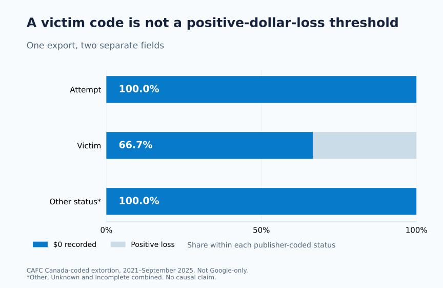
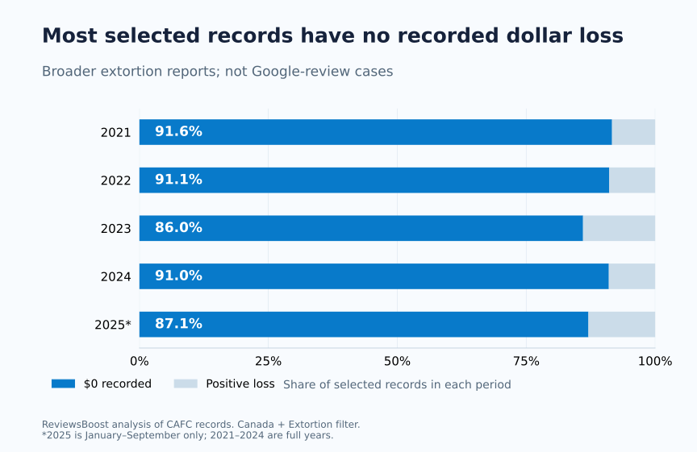
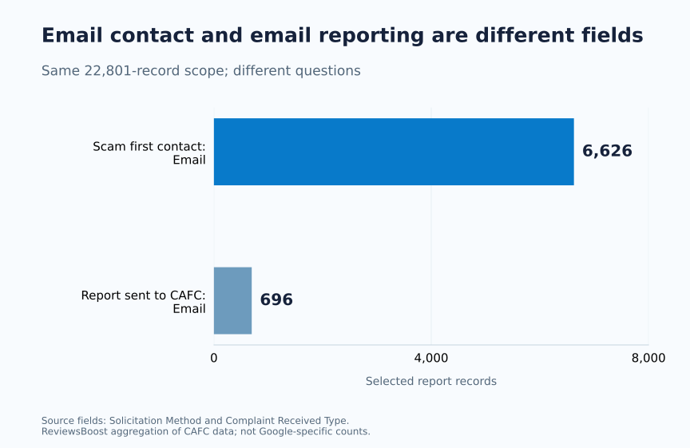

Do you have to lose money before reporting Google review extortion?
No. If someone ties a demand for money, goods or favours to removing suspicious Google reviews, preserve the demand and use Google’s dedicated reporting route. Its guidance does not ask you to pay first. In fact, Google says: Do not engage with or pay the malicious individuals.
Google’s review-extortion guidance.
For an owner facing a one-star attack, the damage may be the threat itself: time spent checking the listing, uncertainty about customers seeing it, and pressure to make a quick decision. A recorded dollar loss is a different measure. Treating the two as interchangeable makes both a weak response plan and a misleading statistic.
We tested that distinction against Canada’s public fraud-reporting data. Our new compilation isolates 22,801 records coded to Canada and extortion in a pinned Canadian Anti-Fraud Centre export. Of those, 20,636—90.5%—record $0 in the dollar-loss field.
These are broader extortion reports from 2021 to September 2025. They are not 22,801 Google review attacks, a business-only sample, or a measure of successful review removal. The export cannot identify those subsets. This article combines original aggregate research with Google-specific reporting guidance.
Our contribution: 31 new aggregate data rows, three original figures, source fingerprints, a reproducible analysis script and an evidence worksheet. No complaint identifiers or individual records are republished. Read the method · Download the release.
The surprising part: a Victim code can still have $0 recorded
The selected export contains 6,493 records with the publisher’s Complaint Type set to Victim. Among them, 4,328 have zero recorded dollar loss: 66.7%. That is a separate finding from the 16,109 records coded Attempt, all of which have $0 recorded.
We did not reclassify these people or decide whether a crime occurred. We cross-tabulated two fields that the source already contains. The useful point is narrower: filtering this export to positive dollar amounts would discard most of its Victim-coded extortion records.
A zero in the money column is not a complete account of an extortion report.
ReviewsBoost, Canadian extortion-data audit, version 1.0.0
| Complaint Type | All records | $0 recorded | Positive loss |
|---|---|---|---|
| Attempt | 16,109 | 16,109 | 0 |
| Victim | 6,493 | 4,328 | 2,165 |
| Other / Unknown / Incomplete | 199 | 199 | 0 |
| Total | 22,801 | 20,636 | 2,165 |



A zero field does not establish whether no payment was made, a cost was unreported, a loss occurred later, or the consequences were non-monetary. The export does not resolve all of those possibilities. It also does not measure cancelled bookings, lost sales, staff time or distress. We therefore describe the finding as zero recorded dollar loss, rather than silently turning it into “no harm”. CAFC’s definitions and data notes.
A pattern across the available periods
Zero-dollar entries are not confined to one year in this release. They make up between 86.0% and 91.6% of the selected records in its five reporting periods.



| Period | Records | $0 recorded | Share with $0 |
|---|---|---|---|
| 2021 | 9,663 | 8,855 | 91.6% |
| 2022 | 6,082 | 5,541 | 91.1% |
| 2023 | 2,381 | 2,048 | 86.0% |
| 2024 | 3,083 | 2,806 | 91.0% |
| 2025 (Jan–Sep) | 1,592 | 1,386 | 87.1% |
These are reports in a particular export, not a census of extortion. Changes in reporting, classification, systems and the people who report can affect the series. A smaller count cannot, by itself, establish a safer environment for a business. Nor can a larger count tell us how many Google profiles were involved.
There is also a publication gap worth making explicit. The catalogue available when we checked still points to an export ending in September 2025 and notes a delay associated with a system change. A newer CAFC bulletin discusses the first half of 2026, but it is a different publication with a broader scope. We have not spliced its headline totals into this row-level series. CAFC open-data catalogue · CAFC’s 2026 update.
Two email columns that answer different questions
The dataset contains both Solicitation Method and Complaint Received Type. One concerns how the fraudster initially contacted the complainant; the other concerns how the report reached CAFC. They should not be merged just because both can contain the word Email.
In our selected records, 6,626 name Email as the solicitation method, while 696 name Email as the report-intake method. Those are 29.1% and 3.1% of the same 22,801-record scope, answering different questions. Someone contacted by email can report through a website or by phone.



That distinction matters in a review-extortion case too. The review may be on Google, the demand may arrive through a messaging app, and the owner’s report may go through a separate Google form. The location of one part of that chain is not a reliable label for every other part.
Our downloadable channel table retains both fields separately, including the source’s unknown categories. It does not recode a broad internet category as “Google”, a messaging app, or a particular campaign.
The number we cannot responsibly publish
We cannot calculate a national Google review-extortion rate from this export. There is no Google-platform marker, review link, review-removal decision or complete business-exposure denominator. A country-coded fraud report is also not necessarily a distinct business or a distinct attacker.
The country filter is deliberately strict: Country = Canada. We exclude records whose country is not specified, even though CAFC’s notes explain that its reports have a Canadian nexus. Our 22,801 therefore should not be described as every Canadian-related extortion report.
We also cannot derive a “chance your review will be removed” from the 90.5% figure. The denominator contains no removal requests or platform decisions. It says something about recorded losses in an extortion-reporting dataset, not the strength of a Google policy case.
“ReviewsBoost’s reanalysis found zero recorded dollar loss in 20,636 of 22,801 Canada-coded, broader extortion reports in a 2021–September 2025 export.” Dropping the category or time window changes the claim.
For your Google case, keep the review and the demand together
The national dataset is useful context. Your own evidence has a different job: showing what happened to a particular Business Profile and what someone demanded.
Keep a private record of:
- The affected listing. Record the correct public Business Profile link so similarly named businesses are not confused.
- The specific contributions. Keep direct review links where available and dated screenshots of what was visible.
- The actual demand. Preserve the original communication and its connection to the reviews, rather than only a summary of how it felt.
- The timeline. Distinguish when reviews appeared, when contact arrived, and when any later messages were received.
- The reporting history. Keep the channel, submission date and reference or status actually provided. Do not invent a case number when none was issued.
Google’s dedicated guidance asks for communications, demands, review links and relevant timing. Private sender details may be relevant to its investigation; that is not a reason to publish them in a public response. Its extortion channel is for a direct demand tied to removal, while other policy concerns use the ordinary review-reporting process. Google’s evidence requirements · Ordinary review reporting.
A run of negative ratings alone does not identify who wrote them. A refund dispute alone does not establish a coordinated attack. Describe the material you can preserve and leave unresolved connections unresolved. The worksheet below is designed for that separation, not for generating accusations.
What professional assistance should add
A useful assessment helps identify the correct listing and contributions, organise relevant evidence, distinguish reporting routes and keep track of eligible follow-up. It should make the next step clearer without promising control over Google’s decision.
Hiring an independent service to help prepare a policy-based case is a different transaction from paying the party making a threat. Ask who is doing the work, what they will do, what you will pay and how an outcome will be documented. Never provide your Google password for an initial assessment.
ReviewsBoost provides Google review removal assistance for Canadian businesses. An assessment request is free. Current service pricing is CAD $45 upfront per accepted review, plus CAD $95 for each successfully removed review, with scope and applicable terms confirmed before paid work. Removal is not guaranteed. See the pricing explanation or request an assessment.
Method, source version and limits
On November 13, 2026, we downloaded the CSV linked from CAFC’s open-data catalogue. The pinned file contains 350,361 rows and 21 columns. Its 350,361 source IDs are unique in this snapshot. We retained rows where the English country and thematic-category fields exactly equal Canada and Extortion, producing 22,801 records.
The nominal file window is January 1, 2021 to September 30, 2025. The earliest selected record is dated January 2, 2021 and the latest September 29, 2025. Those observed endpoints do not change the nominal export window. The catalogue’s metadata modification date is March 25, 2026; it does not make the underlying rows 2026 observations.
We parsed the currency field with decimal arithmetic, retained the publisher’s status codes, and calculated counts and shares. Annual rows use their own period totals. The status table uses its own status-row denominator. The channel table uses 22,801 in both field groups. Shares are calculated before rounding; counts remain integers.
For readability, the status chart pools Other, Unknown and Incomplete into one 199-record group. The downloadable JSON explains that grouping. We publish five annual rows, six status-by-loss rows and twenty channel rows: 31 aggregate rows in total. No complaint ID, demographic record, individual report date or narrative is exported.
The source is public reporting data, not an independently validated survey of businesses. We do not infer criminal guilt, platform prevalence, causal changes, financial consequences outside the recorded field or review-removal success. The analysis script validates the source checksum and stops if the file changes, allowing later releases to be distinguished from this one.
Questions Canadian business owners ask
Does Google require proof that I paid the person?
Its extortion guidance focuses on the demand and supporting evidence, and advises against paying the malicious party. Preserve what happened without creating a payment just to strengthen a report.
Can these statistics prove my reviews are fake?
No. These are broader reporting aggregates with no review-level evidence. The facts about your particular contributions and communications still matter.
Can a review disappear without the displayed stars changing?
A rounded aggregate cannot reliably identify the status of one contribution. Check that review and the relevant reporting status. Our rating resilience study explains how review-count arithmetic affects aggregate sensitivity.
What if there is no removal-related demand?
Assess the actual content and available evidence against the ordinary review policies. A low rating or disagreement alone is not a sufficient removal case. Our private evidence builder can help organise the concern.
Download, reproduce and cite
- Five period-level aggregate rows (CSV)
- Six status-by-loss rows (CSV)
- Twenty channel rows with field names and denominators (CSV)
- Complete release, filters, source hash and limits (JSON)
- Reproducible standard-library Python analysis
- Private review-and-demand evidence worksheet (TXT)
- Citation (BibTeX)
Suggested citation: ReviewsBoost Editorial Team. (2026, November 13). Google review extortion: why $0 lost does not mean nothing happened. Canadian extortion-data audit, version 1.0.0. Permanent article and data release.
Contains information licensed under the Open Government Licence – Canada. Source: Canadian Anti-Fraud Centre / Royal Canadian Mounted Police. ReviewsBoost produced the aggregations, figures and interpretation; neither CAFC nor Google endorses this analysis. You may cite our findings and figures with attribution and their scope intact. The source material retains its own terms.
Primary sources and review notes
- CAFC open-data catalogue: source scope, resource links and release notice.
- Pinned public reporting CSV: the actual numeric input, SHA-256
c46f61591da71eadd91c3e47ed3e3cb8102880a8861c027ab7a35182c8bd719c. - CAFC definitions PDF: field meanings, CAD currency and reporting limitations.
- Google’s review-extortion reporting guidance: the dedicated route and relevant evidence.
- Google’s ordinary review-reporting guidance: other policy concerns and reporting.
- CAFC’s first-half 2026 fraud update: newer context, not a numeric input to this release.
Sources checked November 13, 2026. Analysis and figures: ReviewsBoost Editorial Team. Corrections can be raised through our contact process; identify the article, version and calculation concerned. This analysis is not a legal finding about an identified person.